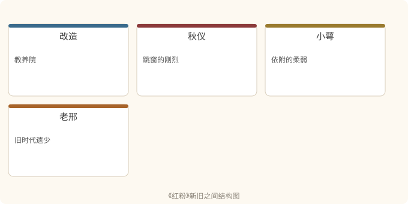

红粉
一、基本信息
| 作者 | 苏童 |
|---|---|
| 成书/出版 | 发表年份待核（中国作家网 C015：'其代表作包括《妻妾成群》《红粉》等中篇'） 《黄雀记》：作为性格悲剧的美学建构（中国作家网）（官方文学机构） |
| 国别/地区 | 中国 |
| 时代 | 现当代 · 当代 |
| 体裁 | 中篇小说 |
| 语言 | 汉语（白话） |

《红粉》新旧之间结构图（主题·结构图）
二、创作背景
中国作家网（C015）：'其代表作包括《妻妾成群》《红粉》等中篇，《米》《我的帝王生涯》《河岸》等长篇'——本作为苏童代表作。
题材（通说待核）：解放初期苏州妓女改造——秋仪与老邢的畸恋。
三、内容脉络
妓女改造运动：喜红院解散，秋仪跳窗逃走、小萼进教养院（通说待核）。
老邢在新旧之间两个女人的拉扯（通说待核）。
四、主要人物表
| 人物 | 身份 | 说明 |
|---|---|---|
| 秋仪 | 妓女 | 刚烈的逃逸者（通说待核） |
| 小萼 | 妓女 | 柔弱的依附者（通说待核） |
| 老邢 | 玩主 | 旧时代的遗少（通说待核） |
五、主题与艺术特点
- 改造运动中的个体命运（通说）。
- '红粉'世界的残存（通说）。
- 颓靡的南方笔调（通说）。
六、影响与评论
- 中国作家网：列为苏童代表作（C015）。
《黄雀记》：作为性格悲剧的美学建构（中国作家网）（官方文学机构） - 1994年李少红电影改编（通说待核）。
《黄雀记》：作为性格悲剧的美学建构（中国作家网）（官方文学机构）
七、阅读建议
难点
- 1950年代改造运动的历史语境。
- 苏童式的颓靡语言。
- 《红粉》（上海文艺出版社等版本，通说待核）。
先《妻妾成群》再本作。
八、待核实
- 首刊年份与刊物核对。
- 秋仪/小萼/老邢人名核对。
- 1994年电影（李少红说）核对。
本页主要来源
苏童的其他收录作品：黄雀记